0
campioni analizzati
il problema è nel frigo di casa
01
Contatto diretto tra due cellule via pili; il plasmide migra dal donatore al ricevente.
02
Il batterio assorbe frammenti di DNA libero rilasciati da cellule morte nell'ambiente.
03
Un batteriofago trasporta inavvertitamente DNA batterico da una cellula all'altra.
Elementi genetici extracromosomici circolari che portano geni accessori — resistenza, virulenza, metabolismi. Si replicano in autonomia e attraversano specie diverse.
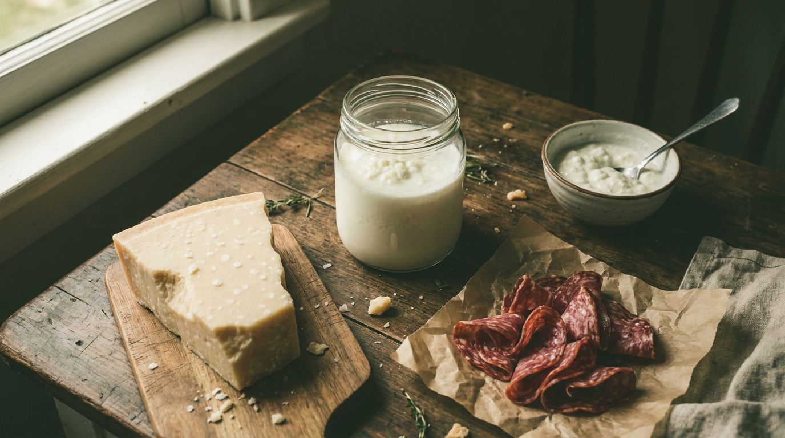
i fermentati che ami sono anche un veicolo
I batteri lattici — protagonisti del formaggio, dello yogurt, dei salumi — condividono lo stesso ambiente dei patogeni opportunisti.
zinno et al. · 2023 · food microbiology
Obiettivo: misurare la presenza di geni di resistenza a tetracicline negli starter caseari, lievito naturale del nostro patrimonio fermentativo, e tracciarne il rischio di trasferimento orizzontale.
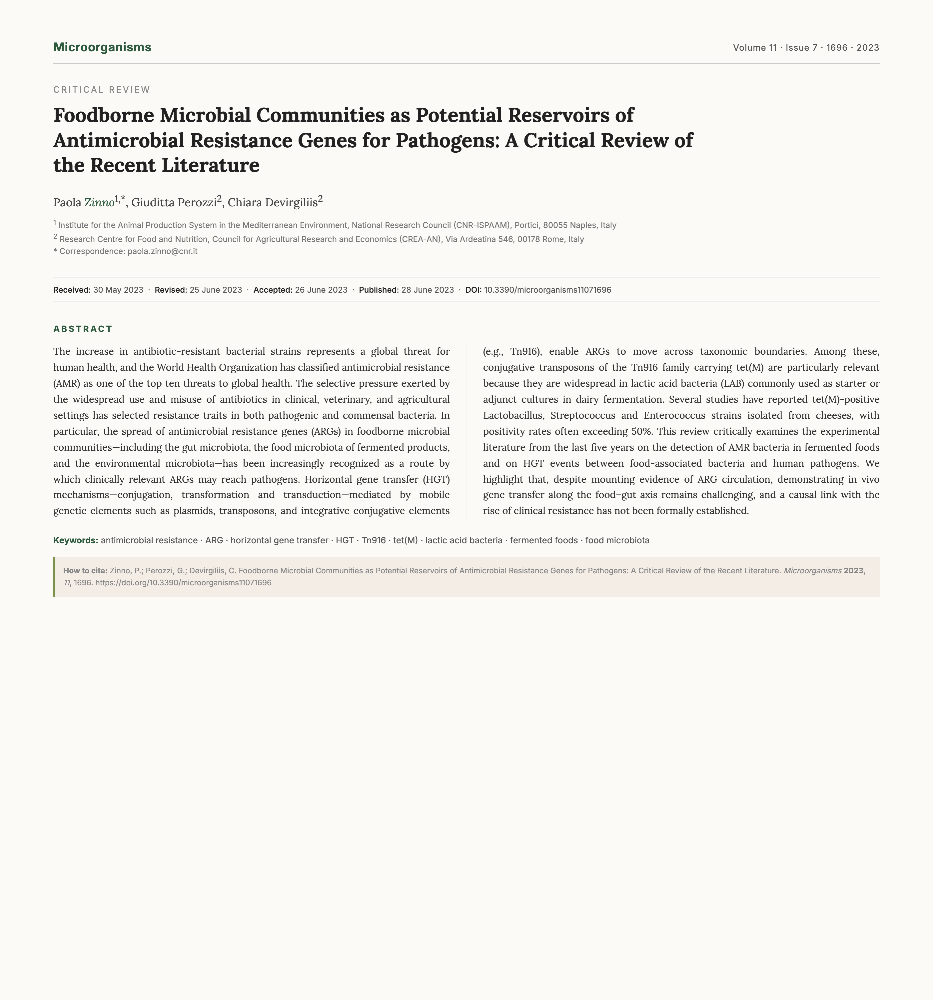
01 · raccolta
campioni caseari
120 starter da 9 specie LAB (Lactobacillus, Streptococcus, Enterococcus) da formaggi di 3 regioni italiane.
02 · coltura
isolamento lab
Selezione su MRS e M17 agar, conferma per via fenotipica + sequenziamento 16S rRNA.
03 · pcr
screening tet(m)
Amplificazione gene tet(M) (~700 bp) + sequencing per identificare varianti e contesto trasposonico.
04 · risultato
positivi 67/120
56% dei campioni porta tet(M) integrato in Tn916, confermato come trasposone coniugativo attivo.
0%
Più della metà degli starter analizzati ospita il gene di resistenza alle tetracicline — pronto a circolare.
0
campioni analizzati
0
positivi tet(m)
0
specie lab coinvolte
0
regioni d'italia
tn916 · 18 kb · trasposone coniugativo
Tn916 si stacca dal cromosoma del donatore grazie all'integrasi int, viene trasferito per coniugazione, e si reintegra in un nuovo ospite. È autosufficiente: porta con sé tutto il macchinario molecolare (int, xis, tra, ori-T) per saltare di specie in specie.
il contatto avviene davvero, nel cibo.
Zinno ha dimostrato in vitro che LAB e patogeni coniugano nel siero del formaggio — non solo ipotesi, ma scambio osservato.
01 · diffusione
il gene è dove non guardavamo.
67/120 campioni positivi a tet(m) — il 56% degli starter caseari italiani analizzati. Nove specie LAB coinvolte (L. plantarum, L. paracasei, S. thermophilus, E. faecium tra le principali). Non un'eccezione, ma una costante nel patrimonio fermentativo nazionale.
02 · mobilità
il vettore è già pronto.
Tet(M) è integrato in Tn916, trasposone coniugativo di 18 kb. Possiede già tutto il macchinario per l'excisione, il trasferimento orizzontale e la reintegrazione: int, xis, tra e ori-T. Nessuna barriera molecolare resta.
03 · contatto
il trasferimento avviene davvero.
Zinno ha osservato la coniugazione in vitro tra ceppi LAB donatori e Enterococcus faecalis ricevente nel siero del formaggio simulato. Efficienza misurata: 10⁻⁶ – 10⁻⁴ transconiuganti per donatore. Lo scambio non è teorico — è documentato.
manca la prova in vivo
01 · scala
Tutto in vitro, in siero ricostituito di formaggio. Nessun dato su intestino umano reale né su matrici alimentari complete. Il passaggio mucosa→sistemico resta da dimostrare.
02 · ceppi
9 specie LAB testate, una manciata di patogeni riceventi. La varietà reale del microbiota alimentare include centinaia di taxa. L'efficienza media potrebbe essere sotto- o sovra-stimata.
03 · tempo
Colture brevi (24–48 h). I tempi reali di transito gastrointestinale variano da ore a giorni. Più tempo = più finestra per la coniugazione.
04 · dose
Concentrazioni di LAB 10⁸–10⁹ CFU/ml, ben sopra la fisiologia normale dopo digestione. Serve replicare in condizioni alimentari realistiche.
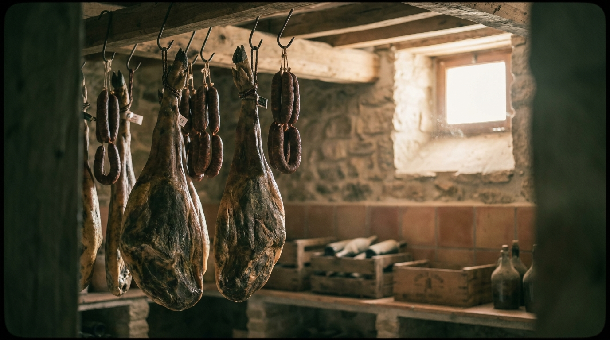
diaz et al. · 2025 · food microbiology
salumi spagnoli: ARG in matrice carnea stagionata.
→ giorgio
xiang et al. · 2025 · microbiome
metagenomica: ARG nel microbioma dei fermentati.
→ peppe
finora: il gene c'è, il vettore è pronto, lo scambio è documentato.
→ salumi spagnoli, ARG in matrice carnea stagionata · diaz 2025
díaz 2025 · meat science
díaz-martínez et al. · 2025 · meat science 232
Il tipo di prodotto e la stagionatura influenzano i profili di resistenza dei batteri lattici? Studio originale dell'Università di Córdoba, fresco di pubblicazione (novembre 2025).
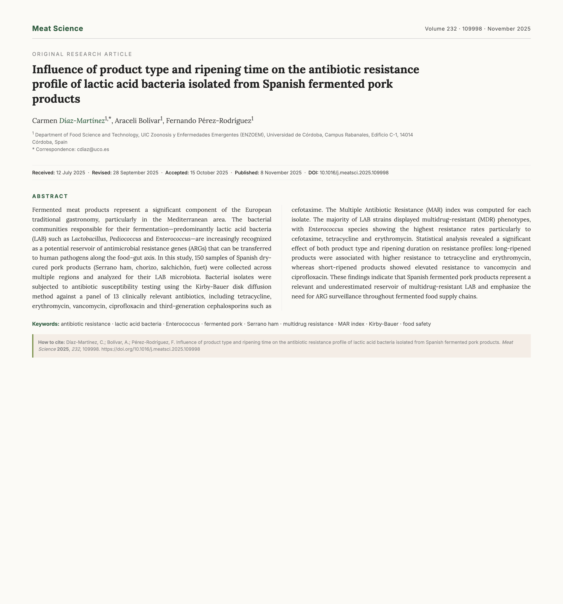
0%
Oltre due terzi degli isolati mostra resistenza a 3 o più antibiotici diversi — un reservoir silenzioso nel cibo quotidiano.
cosa pesa davvero sulla resistenza?
01 · raccolta
150 campioni
Salumi spagnoli (jamón Serrano, chorizo, salchichón, fuet) da più regioni iberiche.
02 · isolamento
lab + enterococchi
Selezione su MRS, M17, BEAA. Conferma fenotipica + sequencing 16S rRNA.
03 · kirby-bauer
13 antibiotici
Diffusione su disco: tetraciclina, eritromicina, vancomicina, ciprofloxacina, cefotaxima e altri.
04 · mar index
multiresistenza
Calcolo dell'indice MAR (Multiple Antibiotic Resistance) per ogni isolato e classificazione MDR.
cefotaxima
0%
Cefalosporina di terza generazione — picco di resistenza tra gli enterococchi isolati.
tetraciclina
0%
Stessa famiglia del paper di Zinno — tet(M) è ovunque negli alimenti fermentati.
eritromicina
0%
Macrolide, usato in clinica per infezioni respiratorie e cutanee.
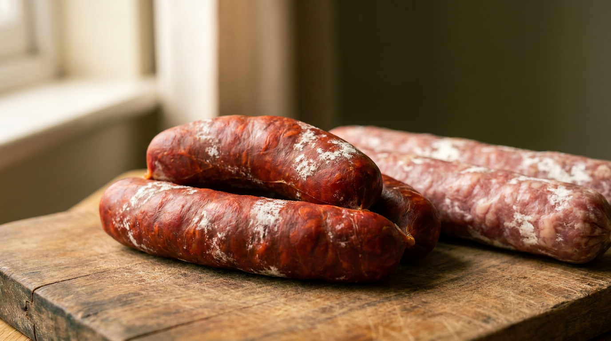
stagionatura breve
12 – 24 mesi
Resistenza più alta a tetraciclina ed eritromicina. Tempo lungo = pressione selettiva costante sui geni mobili classici degli alimenti fermentati.
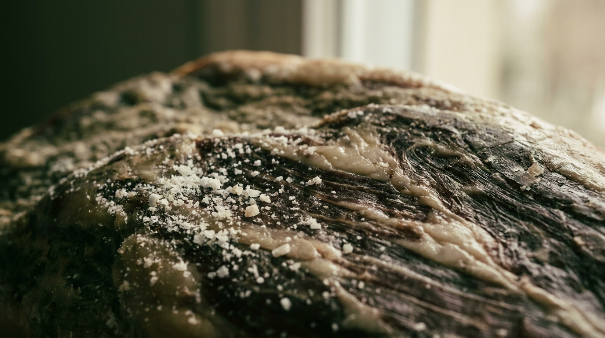
stagionatura lunga
0 – 4 settimane
Resistenza più alta a vancomicina e ciprofloxacina. Tempo breve = patrimonio di starter commerciali pre-esistente, meno modulato dall'ambiente di stagionatura.
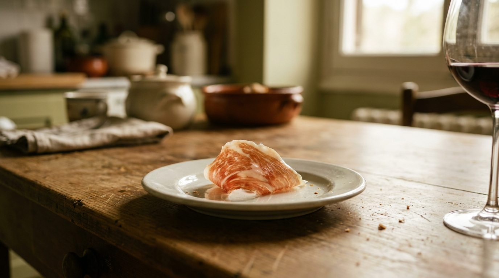
ogni fetta porta con sé un reservoir.
Chi mangia salumi fermentati introduce nel proprio intestino LAB multiresistenti — non più un'astrazione di laboratorio, ma una pratica quotidiana.
01 · meccanismo
Resistenza fenotipica testata (Kirby-Bauer), ma i geni specifici non sequenziati. Non sappiamo quali ARG precisi sono coinvolti.
02 · trasferimento
Presenza dimostrata, ma non l'HGT verso patogeni umani. Resta da provare il passaggio nell'intestino.
03 · scala europea
Solo prodotti spagnoli, una sola regione di origine. Serve estensione ad altri salumi mediterranei per generalizzare.
finora: il gene c'è (zinno), i salumi sono mdr (díaz). ma quanto arriva davvero nel microbioma intestinale?
→ metagenomica del microbioma e ARG · xiang 2025
xiang 2025 · npj biofilms & microbiomes
xiang et al. · 2025 · npj biofilms & microbiomes 11
Metagenomica shotgun di douchi (fagioli fermentati), fu ru (tofu fermentato), dou jiang (pasta di soia) — la prima prova sperimentale del trasferimento orizzontale di ARG dal cibo all'intestino. Pubblicato Nature group, luglio 2025.
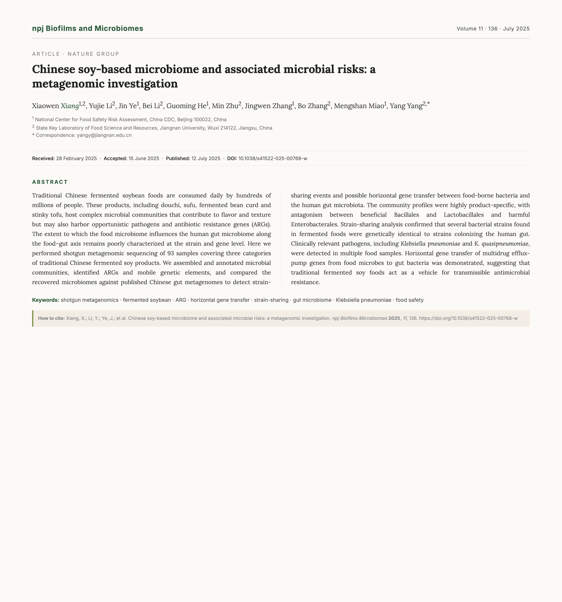
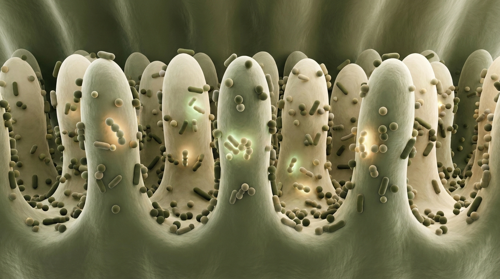
quando li mangiamo, colonizzano davvero?
Tracciare i ceppi batterici e i geni di resistenza dal cibo fermentato cinese al microbiota intestinale umano, usando la metagenomica shotgun — sequenziamento dell'intero DNA microbico, non solo del 16S rRNA. Per la prima volta a livello di ceppo e gene.
01 · raccolta
93 campioni
Cibi fermentati di soia tradizionali cinesi: douchi (fagioli), fu ru (tofu), dou jiang (pasta) da diverse province.
02 · metagenomica
shotgun seq
Sequenziamento dell'intero DNA microbico — non solo 16S, ma tutti i geni di tutti i batteri.
03 · confronto
gut metagenomi
Confronto strain-by-strain con metagenomi del microbiota intestinale cinese pubblicati.
04 · hgt analysis
ARG tracking
Identificazione di eventi di trasferimento orizzontale di geni di resistenza tra cibo e gut.
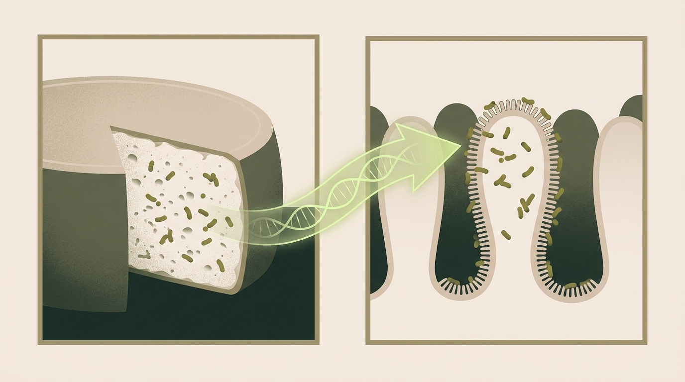
0ceppi
la metagenomica ha trovato 203 ceppi batterici geneticamente identici sia nei prodotti di soia sia nel microbiota intestinale cinese — non parenti, gli stessi ceppi.
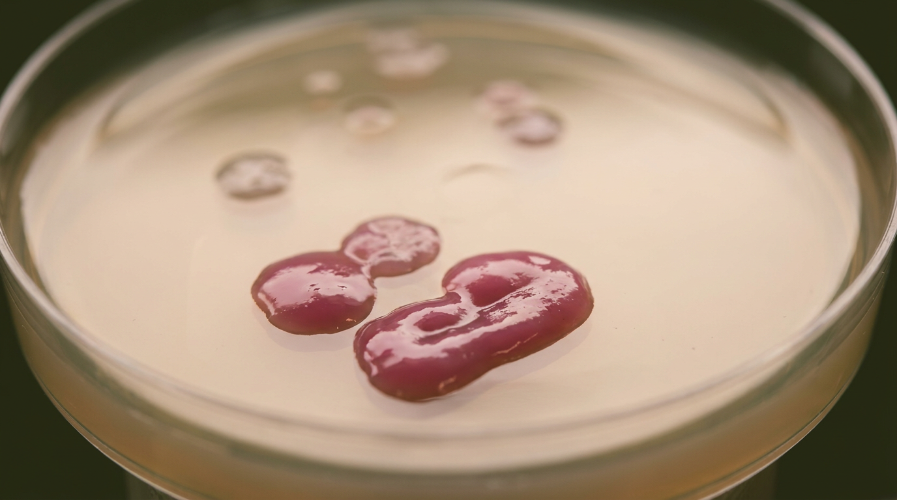
patogeno · multiresistente · trovato
Identificata in più campioni di cibo fermentato — patogeno nosocomiale classico, responsabile di polmoniti, sepsi e infezioni urinarie ospedaliere. Anche la cugina K. quasipneumoniae è stata trovata.
gene
acrAB-tolC
0%
Pompa di efflusso multi-substrato — conferisce resistenza a tetracicline, fluorochinoloni, beta-lattamici contemporaneamente.
gene
mdtABC
0%
Trasportatore MFS — efflusso di antibiotici aminoglicosidici e antisettici comuni nelle cliniche.
gene
tetA / tetK
0%
Pompa specifica per tetracicline — la stessa famiglia di geni del paper di Zinno, qui trovata trasferita.
il cerchio si chiude.
01 · prova
non più solo teoria.
Strain-sharing dimostrato a livello molecolare. Zinno ipotizzava, Díaz osservava in vitro, Xiang quantifica nel sistema reale.
02 · vettore
il cibo è una via attiva.
Le pompe di efflusso multi-resistenza sono trasferite dal cibo al microbiota. Una sola dose può veicolare resistenze a più antibiotici insieme.
03 · sorveglianza
i protocolli sono obsoleti.
I metodi standard (conta UFC, terreni selettivi) non vedono ARG né HGT. Serve metagenomica nei controlli alimentari, non solo nell'epidemiologia clinica.
01 · geografia
Solo cibi cinesi e gut metagenomi cinesi. Il legame potrebbe variare in altre popolazioni con diete e microbiota diversi.
02 · temporalità
Il match strain-sharing è una correlazione su campioni statici. Manca lo studio longitudinale per provare il flusso causale.
03 · espressione
Non tutti i geni di resistenza trovati sono necessariamente espressi o funzionali: la presenza del gene non garantisce l'attività della resistenza.
Il gene di resistenza esiste negli alimenti fermentati che mangiamo ogni giorno — formaggio, salume, soia.
Il vettore molecolare (Tn916, plasmidi, pompe di efflusso) è pronto a saltare di specie.
Il trasferimento al microbiota intestinale è ora documentato — non più una possibilità, un fatto.